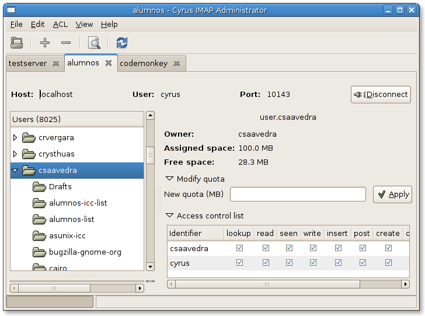

The main screen, showing us how gyrus can administrate several servers at the same time.

Downloads
The latest releases can always be found at the GNOME ftp site.
The latest release is 0.3.8 (announcement, errata).
Feedback
Bugs should be reported to the GNOME Bug Tracking System.
You can get in touch with developers and other users by sending a mail to the gyrus mailing list [Archives].